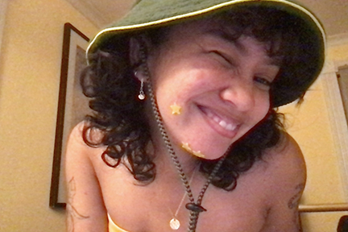
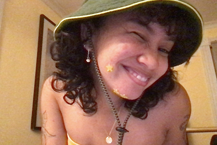

My dearest loves consist of those in my immediate family: Ibu (my mom), Pops (my dad), Gabie (my sister), Luna (my cat), and my 3+yr partner, Goober (aka shayne).
I've always been fairly close to my family, but that does not mean we know the full inner workings of each other's minds. I can pick apart characteristics and mannerisms of each of them, but I feel that could be normal overtime with the people you love. You know what they like, what they don't like, the way they do things, and the way they dissapprove.
Luna likes her dinner at exactly 5 PM, which is early for dinner but she doesn't care. We live on her time. My dad keeps his glasses by his bedside, so if you find it anywhere else please place it back at his bedside because he will be lost looking for it later and make me search the house. Shayne likes to start his morning watching the stock market so he'll turn on his tv, two laptops, and his phone so that he can watch the charts. He'll have an extra-large dark roast coffee at his bedside. He'll mourn every strand of hair that falls from his head. My mom will pick my dad and I apart at the first sight of us, but it's only because she loves fervently through worry and guidance. She's stubborn and loving and so tired and deserves more than she got. Asian moms. My sister is one of my best friends and I don't spend as much time with her as I should. Since I started uni in 2019, I've been away from my loves most of the year.
I document my relationships, both romantic and familial, as a means of navigating through moments of my life and investigating the dynamics in the relationships of others' and myself.
Browse my photo work. Browse my instagram. Browse my linkedin. 
